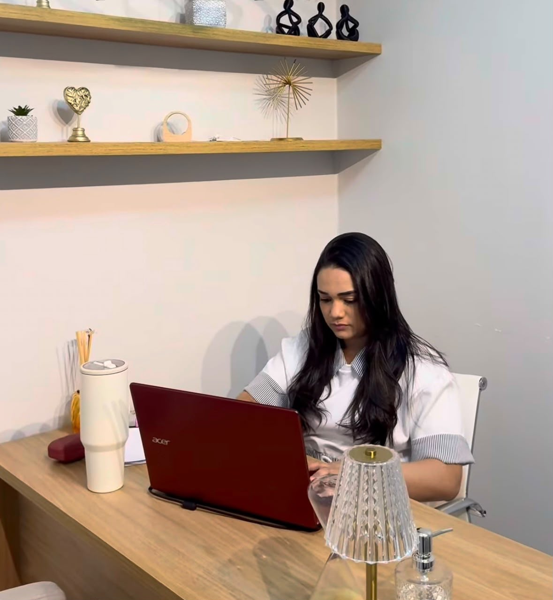

Ansiedade
Compreenda os gatilhos da ansiedade e desenvolva recursos para lidar com pensamentos, sensações e comportamentos.
Psicoterapia presencial e on-line
A psicoterapia pode ajudar você a reconhecer padrões e construir uma vida com mais equilíbrio, autonomia e sentido.
Atendimento presencial na
Clínica Moriá e on-line.
acolhimento · escuta · transformação
Quando buscar ajuda
Em alguns momentos, pode ser difícil entender o que acontece internamente ou encontrar uma maneira mais saudável de lidar com as próprias emoções.
Buscar ajuda psicológica não é sinal de fraqueza. É uma forma consciente de cuidar da sua saúde emocional.
Conversar sobre atendimento ↗Como posso ajudar
Compreenda os gatilhos da ansiedade e desenvolva recursos para lidar com pensamentos, sensações e comportamentos.
Aprenda a reconhecer, compreender e acolher suas emoções de forma mais consciente e saudável.
Construa uma relação mais respeitosa consigo, trabalhando inseguranças, autocrítica e limites.

Sobre mim
Sou psicóloga clínica e acredito na psicoterapia como um espaço de acolhimento, escuta e construção de novas possibilidades.
Meu trabalho é ajudar você a compreender suas emoções, reconhecer padrões e desenvolver recursos para enfrentar os desafios da vida com mais consciência e autonomia.
“Cada processo é conduzido com respeito à história, ao ritmo e às necessidades de cada pessoa.”
O processo terapêutico
Um processo construído em conjunto, em um espaço confidencial e sem julgamentos.
Você conhece as modalidades e verifica a disponibilidade.
Conversamos sobre suas necessidades e expectativas.
Os objetivos são construídos de forma individual e colaborativa.
Trabalhamos pensamentos, emoções e comportamentos.
Modalidades
Clínica Moriá
Sessões em um ambiente acolhedor, reservado e preparado para oferecer conforto e privacidade.
Consultar disponibilidade ↗Onde você estiver
Sessões por videochamada, com privacidade e comodidade, em um ambiente seguro e reservado.
Consultar disponibilidade ↗Você não precisa controlar tudo o que sente.
Pode aprender a compreender e cuidar do que sente.
Dúvidas frequentes
Respostas para deixar esse primeiro passo mais tranquilo.
A terapia pode ser buscada em momentos de sofrimento ou como forma de autoconhecimento e cuidado emocional.
O encontro acontece por videochamada, em horário combinado, em um ambiente reservado.
Sim. O atendimento psicológico segue o dever de sigilo profissional.
Valores, formas de pagamento e frequência são conversados diretamente.
Vamos conversar?
Entre em contato para conhecer o atendimento e verificar os horários disponíveis.
Falar com Marcela ↗Atendimento presencial e on-line